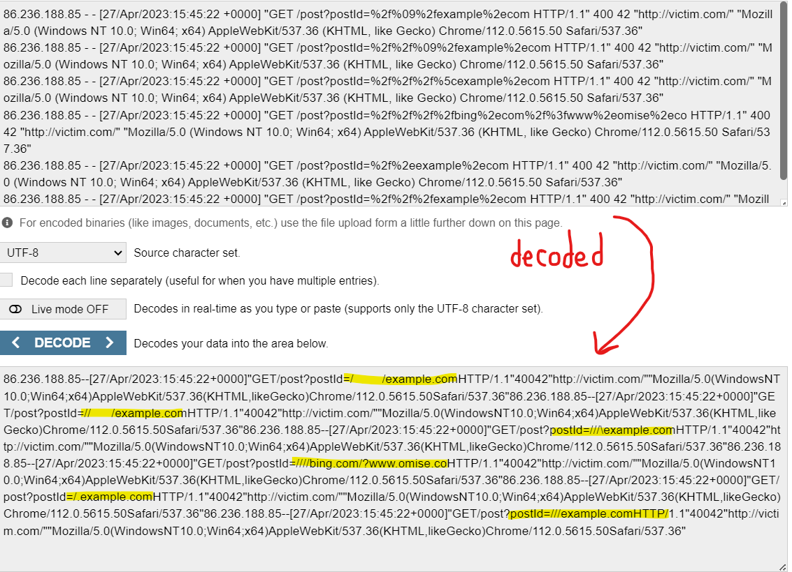
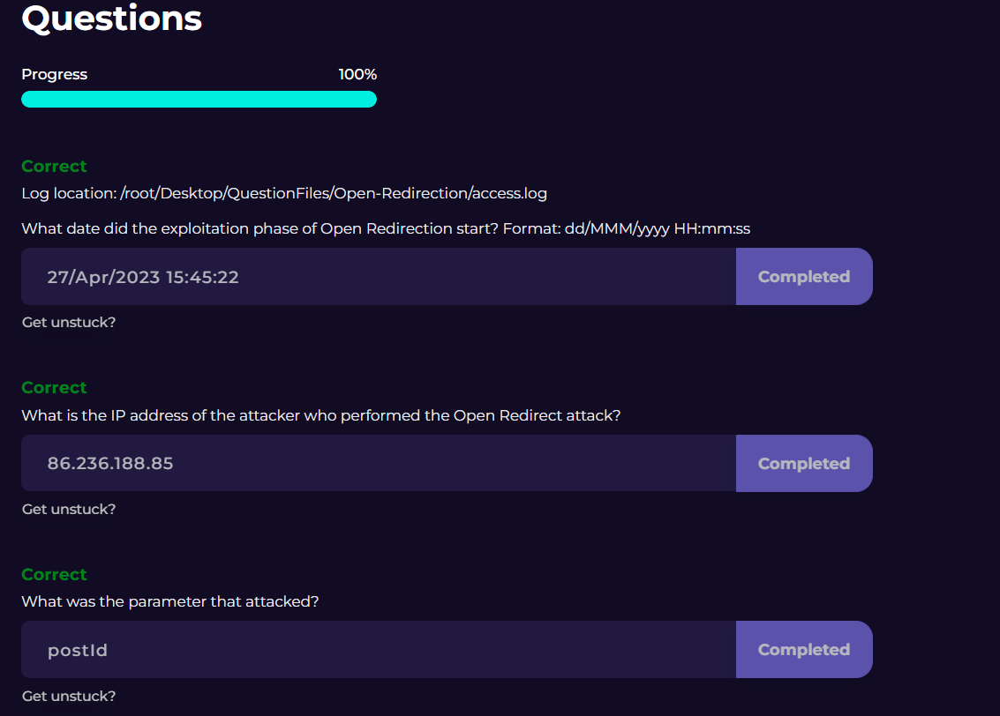

Today is January 12, 2025, and I've just finished the Let's Defend course on Open Redirection attacks.
Open Redirection is a web application vulnerability that concerns the manipulation of a web app or website's redirect mechanism - typically to a malicious URL that has been prepared by an attacker. In this course, I learned how to identify and prevent these attacks.
Identifying Open Redirection involves analyzing logs for suspicious and consecutive querying of string parameters, and the payloads are many times in a URL structure. The goal of the attacker is to get the user to visit this malicious URL! What I have learned is that there are a few methods of finding these attacks:
1) You can look for continuous, repetitive querying on parameters in a URL structure
2) You can look for the use of encoded characters and optionally use a decoder to reveal the intention of the characters - in this case redirection.
3) Pay attention to redirections to IP addresses instead of URLs as well
4) Watch out for redirections from unusual locations
5) Look for unexpected external URLs in the paramters, such as "redirect?url=", "next=", "return=", "dest=", and "continue="
6) Notice when things like shortened URLs are used, typically to hide the name of the malicious URL
The measures used in preventing Open Redirection attacks are much like the steps one would take in preventing most web vulnerabilities - sanitizing data, validating user-supplied input, ensuring user authentication, and limiting authorization to the minimum necessary options for users vs admins. Additionally, making sure that only trusted and white-listed URLS are allowed for redirection.
Let's take a look at the lab exercise I did:
(The image above was taken from the lab environment that I passed on Let's Defend)
Take a look at the logs.
From lines 1-95, there are normal get requests with a successful reponse code of 200, which looks like a user is querying the "postId" parameter. This appears to be normal traffic, likely browsing different posts, as the querying does not appear to be done using a tool and there is a reasonable amount of time between requests. Now, let's look at line 96.
Left to right, the highlighted portions are the users IP, the date and time, the suspicious encoded query on the postId parameter, and the response code with the relative byte size. The encoded characters stand out when you know what you're looking for (see #2 in list found in previous paragraph). Immediately, I knew this was worth checking into, so let's pop the log data into a decoder:

So, now we see that, indeed, the "postId" parameter was being manipulating by a user attempting to get the site to redirect to several different sites. Now, in this case, there is a redirect to a harmless site like "example.com". However, if you look closely, you'll notice an attempted redirect to "bing.com?www.omise.co". This is where things get interesting. Omise.co is a payment gateway for Thailand, Japan and Singapore; providing both online and offline payment solutions to merchants. In my eyes, this looks like someone is attempting to get the site to redirect to a payment gateway that likely leads to a way for to them steal money from users, either in a phishing or social engineering type of attack. Luckily the response code is 400 (bad request error) and the byte size was only 42, indicating to me that this these attempts were not successful. So, with that knowledge, I went on to answer the questions! Let's have a look:

The questions were easy once the information has been gathered.
#1 - simply the date that attack began - started in line #96
#2 - the IP of the user, found on the far left and easily recognizable
#3 - the paramter being attacked is the "postId" parameter because it was queried consecutively, very quickly (likely using a tool), and it is where the encoded URL was found.
I hope you found this review helpful and informative!